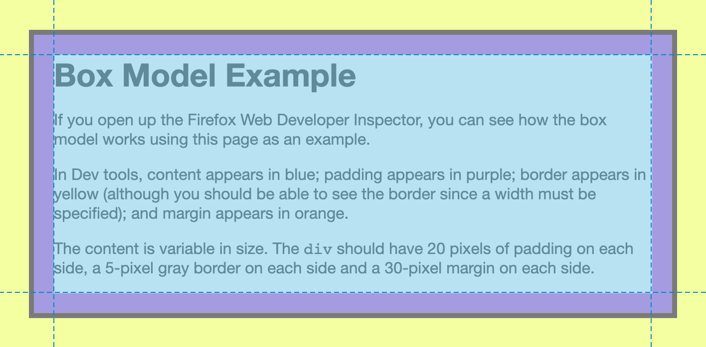

Box Model
Every block element includes the following components:
- content
- padding
- border
- margin
Visualizing the Box Model
It looks a little something like this:
In Chrome Dev Tools, an element's content appears in blue; padding in green; border in yellow; and margin in orange.
Padding
Padding is the space between content and a border.
It is specified using the following properties:
padding-toppadding-rightpadding-bottompadding-left
Border
A border appears between padding and margin.
It always requires the following components:
widthstylecolor
Border Properties
A border can be specified using a combination of the following properties:
border-top-widthborder-top-styleborder-top-colorborder-right-widthborder-right-styleborder-right-colorborder-bottom-widthborder-bottom-styleborder-bottom-colorborder-left-widthborder-left-styleborder-left-color
Margin
Margin encloses content, padding and border, and separates the element from other elements.
It can be specified using the following properties:
margin-topmargin-rightmargin-bottommargin-left
An Analogy
Think of picture frames on a wall.
The image is content. The matte is padding. The frame is a border. The space separating the frames from others is the margin.
Shorthand
Can you imagine having to write 20 properties just to define how the padding, border and margin should appear?
CSS recognizes shorthand properties, which take the order of values given and applies them to the appropriate edge.
Shorthand property for the box model are:
paddingborderborder-topborder-rightborder-bottomborder-left
margin
There are shorthand properties for background and font, too!
Shorthand Values
Up to four values may be specified with each property (padding, margin).
Shorthand values are represented in a clockwise order:
- top
- right
- bottom
- left
A mnemonic: "Teddy Roosevelt, Bear Lover"
Shorthand Values — 4-Value Syntax
The first value is applied to the top; second to the right; third to the bottom; and fourth to the left.
margin: 10px 20px 30px 20px;
Shorthand Values — 3-Value Syntax
The first value is applied to the top; the second to the left and right; and the third to the bottom.
margin: 10px 20px 30px;
Shorthand Values — 2-Value Syntax
The first value is applied to the top and bottom; the second is applied to the left and right.
margin: 20px 10px;
Shorthand Values — 1-Value Syntax
A single value will be applied to all sides.
margin: 10px;
Shorthand for Borders
Border shorthand requires information about width, style and color.
The following will apply a border to all sides of an element.
border: 1px solid #222;
There is no directional shorthand for borders. The side is part of the property.
border-bottom: 1px solid #222;
border-left: 1px solid #222;
Sizing Boxes
Up to now, the space taken up by an element depends on:
- the content
- whether an element is block or inline
- the box model
Dimensions
Elements are not limited to having an exact width or height.
Minimums and maximums may also be declared to improve an element's responsiveness.
- width
- max-width
- min-width
- height
- max-height
- min-height
Overflow
What if our content is greater in size than the dimensions provided for it?
An overflow value determines how the content is displayed within its parent element.
- visible
- hidden
- scroll
- auto
overflow: visible
Content will be displayed, even if it exceeds the box's dimensions.
overflow: hidden
Content exceeding the box's dimensions will not be displayed.
overflow: scroll
Vertical and horizontal scroll bars will be added to the containing box.
(Different browsers and operating systems may treat this similarly to auto.)
overflow: auto
Vertical and/or horizontal scroll bars are added if necessary.